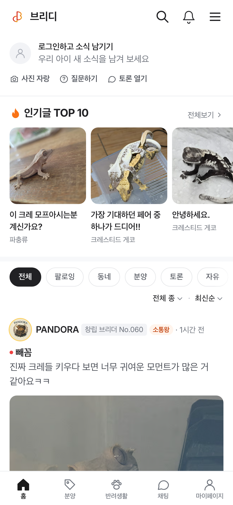
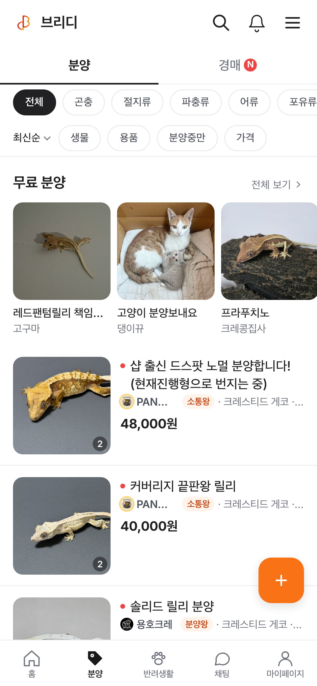
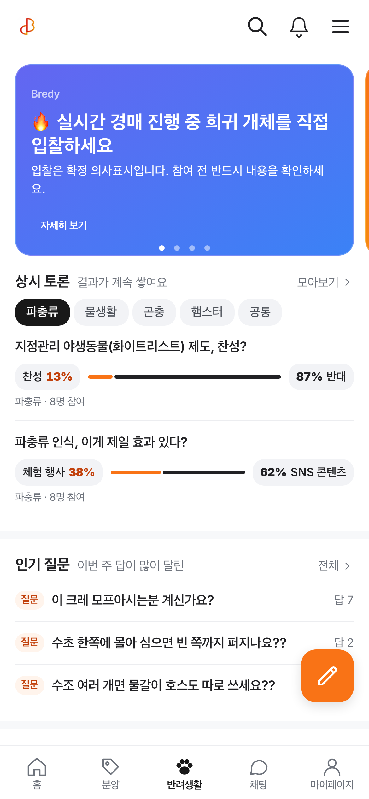
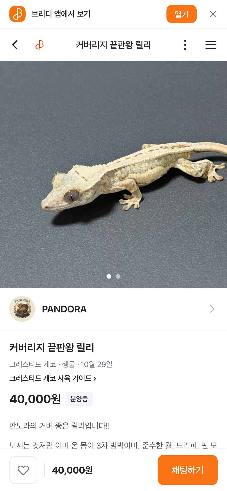
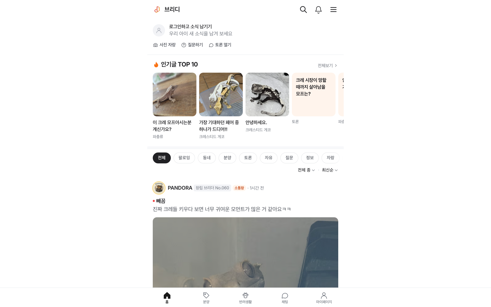
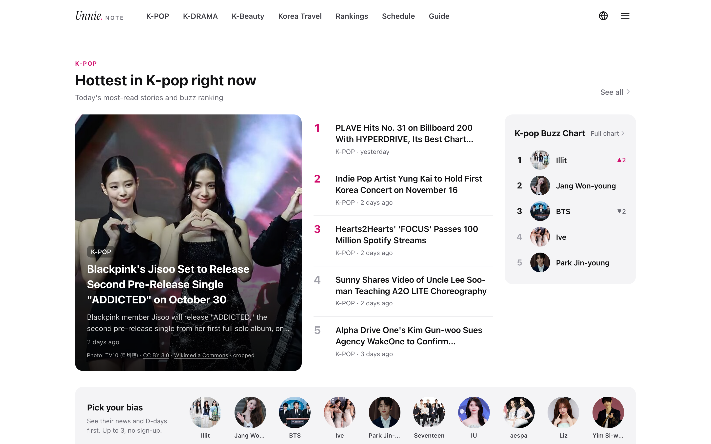
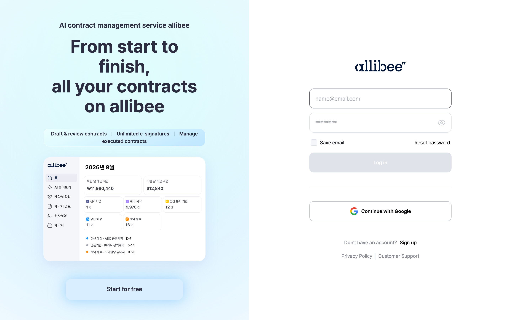
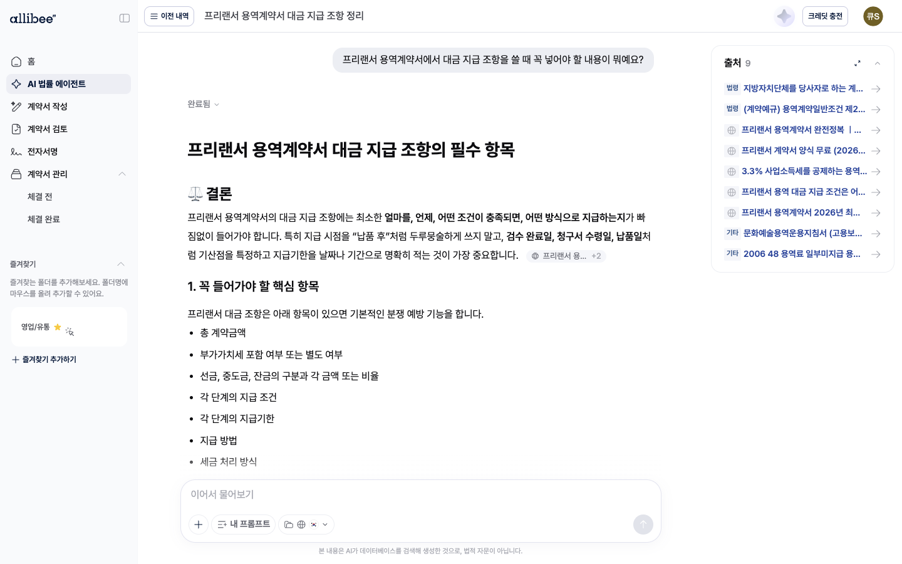
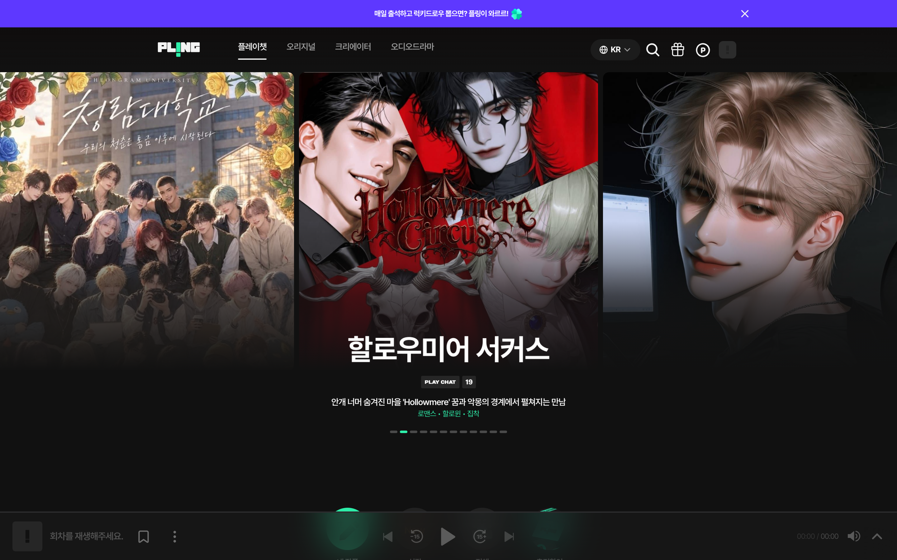

회사에서는 AI 계약 서비스 Cue의 화면을 만들고, 퇴근하고는 생물 분양 커뮤니티 브리디와 K-컬처 미디어 언니노트를 혼자 만들어 운영합니다. 브리디는 웹·서버·DB·iOS·안드로이드를 다 직접 짰고, 지금 앱스토어와 플레이스토어에 올라가 있습니다.
s-maxage + stale-while-revalidate CDN 캐시



출시 전에 인스타 DM과 생물 카페로 브리더와 샵에 직접 연락해 얘기를 들었습니다. 그래서 글마다 올린 사람과 거래 완료 수가 보이게 하고, 거래 후기는 분양자가 지정한 입양자만 쓸 수 있게 했습니다.
수수료 얘기가 계속 나와서 평생 경매 수수료 0원인 창립 브리더 100자리를 열었습니다. 번호 뱃지(No.001)를 붙였더니 출시 나흘 전에 다 찼습니다.
'상품', '판매'라고 써 놨더니 동물이 물건 같다는 말을 들었습니다. 화면에 보이는 말은 전부 '분양글', '분양중', '입양자'로 바꾸고, DB 값과 API는 그대로 둔 채 표시할 때만 변환하는 함수 하나를 웹과 앱이 같이 씁니다.
카카오 프로필 사진이 가입할 때 강제로 들어가는 게 싫다는 말에는 기본 이미지로 바꾸고, 로그인할 때마다 사진을 덮어쓰던 버그도 같이 고쳤습니다.

Next.js API 라우트와 Prisma·PostgreSQL로 회원, 분양, 경매, 채팅, 혈통, 알림, 거래 후기를 만들었습니다. 마이그레이션도 직접 씁니다.
운영 데이터를 덮어쓰는 마이그레이션은 빌드 단계에서 멈추게 해 뒀습니다. 그래서 새 컬럼은 기본값만으로 동작하게 설계합니다.
유찰되거나 낙찰자가 연락이 끊긴 경매를 새 글로 다시 올리게 하면 조회·관심 기록이 다 날아갑니다. 같은 경매 id에 회차를 붙여 다시 열고, 지난 회차 입찰은 따로 보관합니다. 노쇼한 낙찰자는 차단 테이블로 다음 회차 입찰을 막습니다.
동네 무료 분양, 토론 마감, 관심 분야 새 분양글, 답이 없는 질문을 서버에서 보냅니다. Vercel 크론과 GitHub Actions 일정으로 돌고, 사람마다 하루 받는 횟수와 밤 시간 발송을 서버에서 막습니다. 웹은 Web Push, 앱은 FCM입니다.
분양글·게시글·경매·프로필 상세가 캐시 없이 요청마다 렌더링되고 있었습니다. ISR로 묶고, 댓글·좋아요·투표·경매 현재가처럼 자주 바뀌는 부분은 HTML에서 빼서 클라이언트에서 그립니다. 글을 고치면 그 페이지만 바로 다시 만듭니다. 목록 API는 s-maxage + stale-while-revalidate로 홈 피드 60초, 랭킹 5분씩 DB 호출을 줄였습니다.
표시 규칙과 본문 형식 같은 모듈은 웹과 앱이 같은 파일 사본을 쓰고 같은 테스트로 확인합니다. 한쪽만 고치면 커밋이 막히게 해서 둘이 어긋나지 않게 했습니다.
사진·카드 자리를 미리 잡아 화면이 밀리지 않게 하고, 홈 하이드레이션 오류는 서버·클라이언트 HTML을 맞춰 하루 52건에서 11건으로 줄였습니다.

GitHub Actions가 두 시간마다 네이버 엔터 랭킹, 네이트판 같은 곳에서 화제를 모으고, 규칙과 인물 사전으로 점수를 매깁니다. 고른 주제는 모델 한 번 호출로 여러 언어 기사를 쓰고 사진을 붙여 발행합니다.
모델로 점수를 매기는 단계는 비용 때문에 일부러 넣지 않았습니다. 그래서 기사 하나가 4원 정도로 나옵니다.
처음엔 대만을 1순위로 잡았습니다. 숫자를 보니 일본어로 들어오는 사람이 제일 많았고(10/22~28 일본어 110명, 영어 99명, 번체 79명) 일본 광고 단가가 더 높았습니다.
그래서 타깃을 일본으로 바꾸고 홍보도 일본에서 많이 쓰는 스레드·인스타·X로 옮겼습니다. 일본어 기사는 구글과 야후 재팬에서 꾸준히 들어옵니다.

앨리비와 Cue는 가입과 약관이 따로였고, 가입하고 돌아오면 일회용 토큰이 만료되거나 워크스페이스가 두 개 생기기도 했습니다.
처음 그림대로면 프론트가 서버 두 개를 같이 봐야 했습니다. 백엔드와 상의해서 서버끼리 양쪽 로그인을 처리하게 바꿨고, 프론트는 한 곳만 봅니다. 구글 로그인까지 합친 105개 파일짜리 릴리스였습니다.
삼성SDS 요구로 시작했습니다. 형식이 다른 두 계약서를 OCR로 텍스트로 바꾸고 diff-match-patch로 차이를 뽑아, 뷰어에 수정·삭제·추가를 번호와 태그로 표시합니다. OCR이 5분까지 걸려 로딩·중단 버튼을 넣었고, 나중에 구조를 정리하며 458줄을 지웠습니다. 7주 만에 코어 제품 기능이 됐습니다.
폴더를 만들면 엉뚱한 곳에 들어가고, 검색은 불러온 항목 이름만 걸렀습니다. 서버 정렬·커서 기반 무한 스크롤로 새로 만들고 검색은 서버 검색으로 바꿨습니다. 하이라이트는 {@html} 대신 텍스트 노드로 그려 XSS 틈을 막고, 업로드 패널은 새로고침해도 복원됩니다.
광고에 매달 돈을 쓰는데 가입 API에 유입값이 한 번도 넘어가지 않고 있었습니다. 도메인을 넘어갈 때 유입 기록이 사라지는 것도 찾았습니다. UTM을 주소에 실어 가입까지 이어 가게 하자 유입 채널이 보이는 가입이 0%에서 79%가 됐습니다.


오디오 드라마와 웹소설을 여러 언어로 서비스하는 웹앱과, 작품을 올리고 관리하는 CMS, 운영용 백오피스를 만들었습니다.
작업하다 Next.js 자체 버그를 만나 재현 코드와 함께 이슈로 올렸고, 다음 버전에서 고쳐졌습니다.
건물과 입주 상품, 예약, 고객 문의, 계약까지 빌딩 운영자가 매일 쓰는 관리 화면을 만들었습니다. 2년 가까이 같은 제품을 맡아 기능을 계속 늘렸습니다.
고객 문의 데이터를 LLM으로 분석해서 어떤 문의가 많이 들어오는지 운영자가 한눈에 보게 하는 기능을 만들었습니다. 2023년, LLM이 막 쓰이기 시작하던 때였습니다.
같은 일을 두 번 하게 되면 자동화할 방법부터 찾습니다. 뭘 만들기 전에는 쓰는 사람이 정말 좋아할지, 길게 봤을 때 돈이 될지를 먼저 봅니다.